Wushu Sanda
Ana branşı. Wushu'nun dövüş branşı: yumruk, tekme ve atış teknikleri. Balkan şampiyonluğunu bu branşta kazandı.
Proje sorumlusu · Tadilat ustası · Sporcu · Antrenör
İstanbul'dan Sakarya'ya, Sakarya'dan Hamburg'a: el emeği, disiplin ve sözünün eri olmak.
01 — Hakkında
Mustafa Özel, 1983'te İstanbul Üsküdar'da doğdu. İnşaat ve tadilat alanında saha ve proje sorumlusu, çok yönlü bir tadilat ustası; aynı zamanda sporcu ve antrenör. Bugün Hamburg'da yaşıyor.
14 yaşında inşaat sektöründe çalışmaya başladı. Konut yapımı ve tadilat işlerinde iç mimarlar ve mühendislerle birlikte çalıştı; ardından Marmara Üniversitesi Hastanesi'nde baştekniker, doğalgaz firmalarında yönetici oldu. Fayans, boya, alçı ve Spachtel, alçıpan, zemin kaplama ve banyo tadilatında bizzat uygulama yapıyor. Hamburg'da TT Sanierung'de proje koordinasyonu, saha takibi, teknik çizim ve iç mekân tasarımı işlerini yürütüyor.
Spora 10 yaşında başladı: kickboks, Thai boks ve Wushu Sanda. 2005 ve 2006'da İstanbul şampiyonu oldu, 2014–2015'te milli takımda sporcu olarak yer aldı, Balkan şampiyonluğu kazandı ve 2017'de milli takım antrenörlüğü yaptı. Sakarya'da kurduğu Sakarya Fight Club'da ve Pendik'te çocukları ve gençleri spora yönlendirdi, uyuşturucuyla mücadele etti.
Evli ve iki çocuk babası.
“Karasu için çıktım ve eli boş dönmüyorum.”

02 — İş
Mustafa Özel, Hamburg'da TT Sanierung'de saha ve proje sorumlusu. İnşaat ve tadilat projelerinin uygulamasını ve koordinasyonunu yürütüyor; saha çalışmalarının yanında teknik çizim ve iç mekân tasarımı süreçlerinde de görev alıyor. Çok yönlü bir usta olarak işin her aşamasını sahada bizzat biliyor.
Şantiyede öğrendiği şey hayatının her alanında geçerli: sabır, düzen ve işi sonuna kadar doğru yapmak.

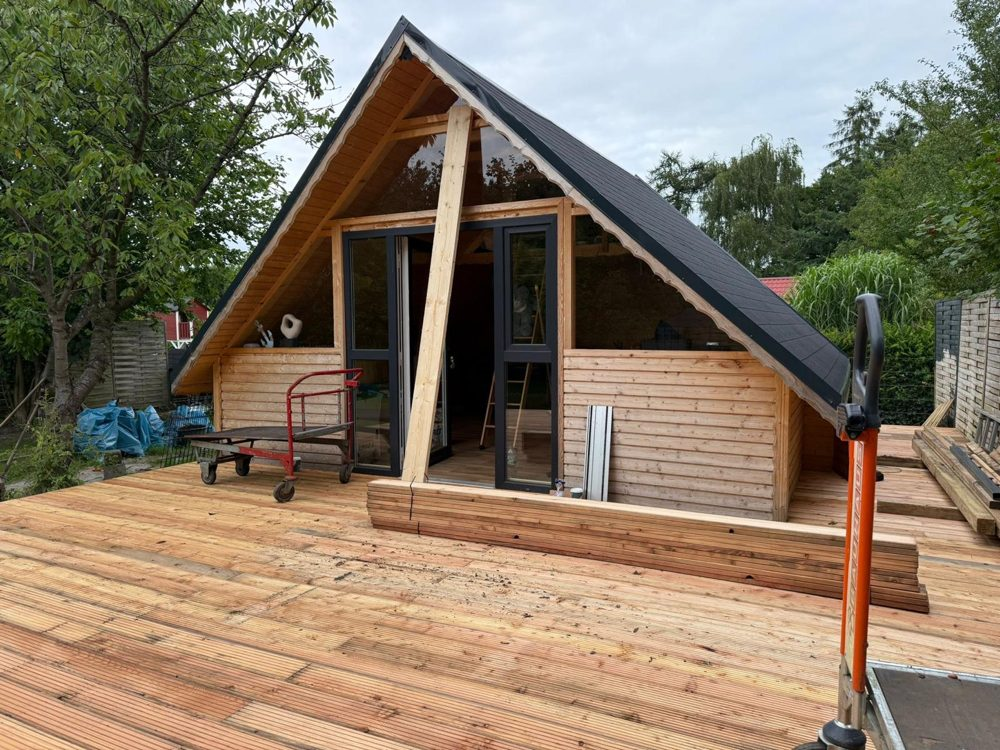
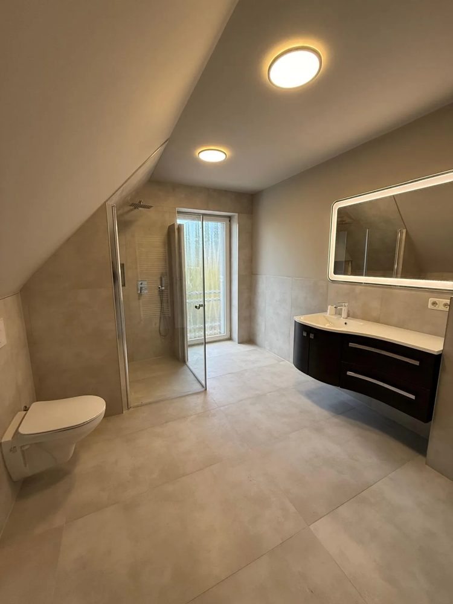
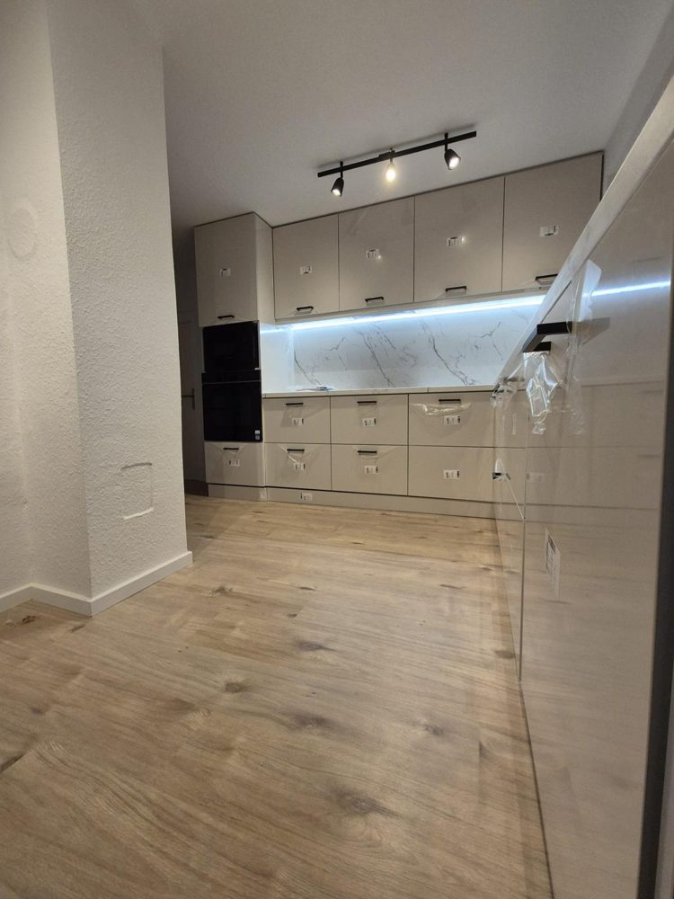
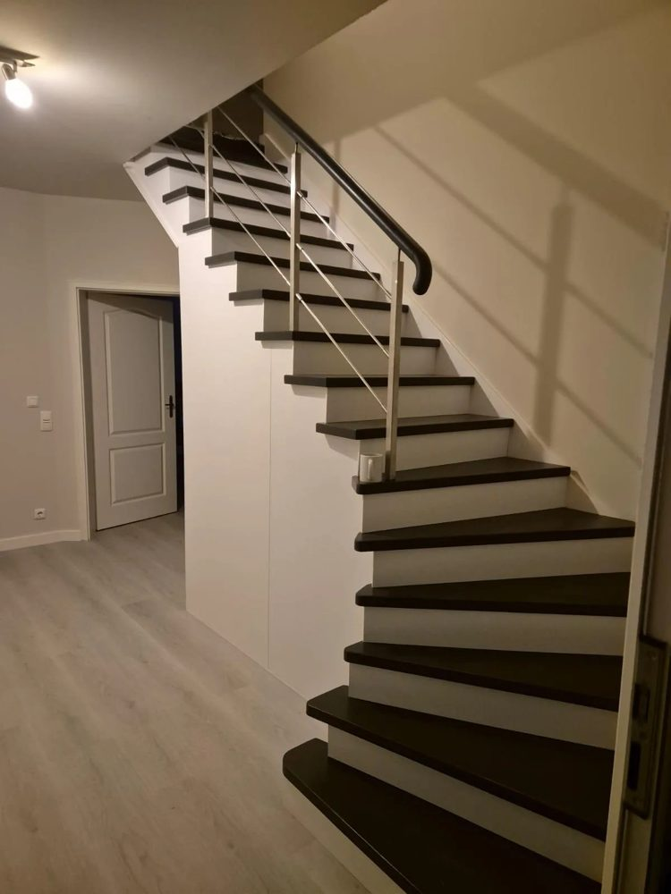
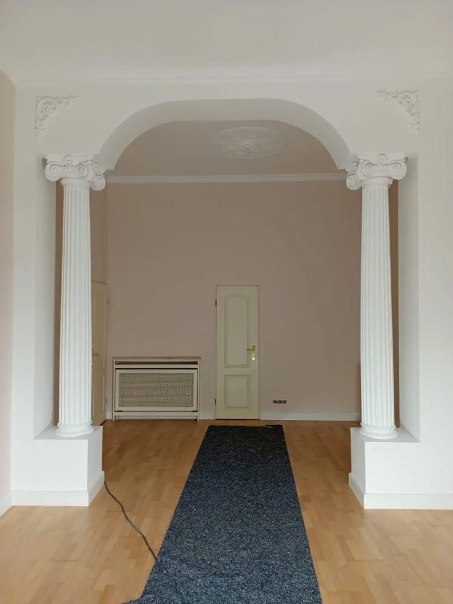
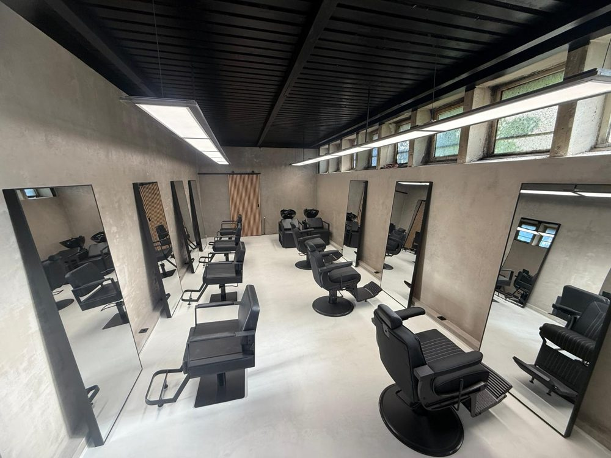
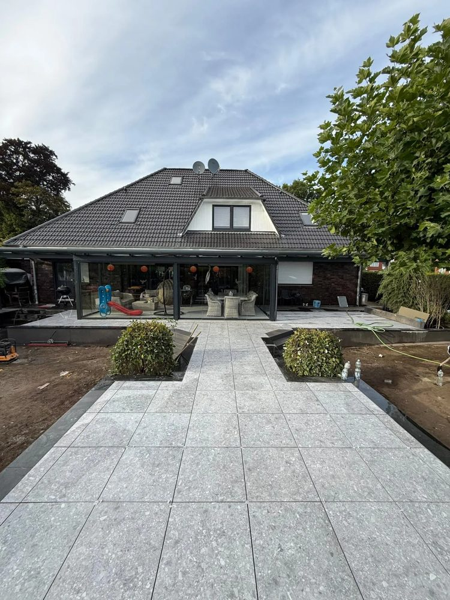
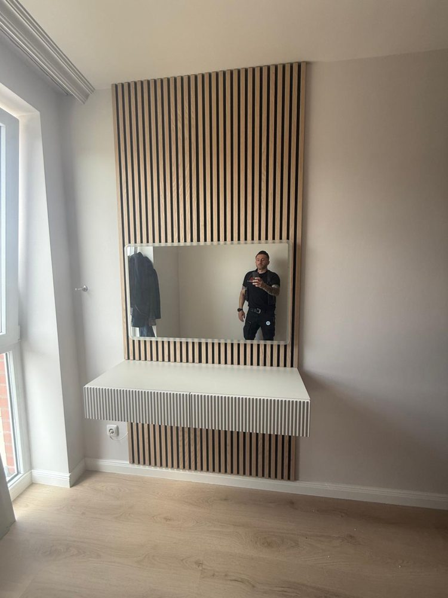
Tüm referanslar: 17 fotoğraf, 29 video tt-sanierung.de
Fotoğraflar: TT Sanierung GmbH referansları
03 — Başarılar
Kickboks, Thai boks ve Wushu Sanda ile spora başlangıç.
İstanbul şampiyonlukları.
İstanbul Pendik'te Dumlupınar Merkez Camii Derneği başkanı. Caminin alt katını spor salonuna dönüştürdü; çocuklara spor çalışmaları yaptı, gençleri uyuşturucudan uzak tuttu.
Milli takımda sporcu.
Sakarya'da Türkiye Wushu Federasyonu antrenör eğitim kursu (17–27 Ocak) ve Duan sınavı: 1. Duan derecesi. 3 Mart 2016'da 1. Kademe Yardımcı Antrenör belgesi.
İstanbul'da Balkan Wushu Federasyonu'nun düzenlediği 3. Açık Balkan Wushu Kungfu Şampiyonası (3–5 Haziran): 10 takımdan 350 sporcu arasında şampiyon. Öz Karasu gazetesi manşetten verdi.
Sakarya'da wushu hakem eğitim kursu (2–4 Eylül): Aday Hakem diploması. Sakarya Wushu İl Temsilciliği'nde hakemlik.
Milli takım antrenörü.
Sakarya Fight Club'ı kurdu: çocukları ve gençleri spora yönlendirdi, uyuşturucuyla mücadele çalışmaları yaptı.
Hamburg'da yaşıyor; TT Sanierung'de saha ve proje sorumlusu.
Belgeler: Türkiye Wushu Federasyonu 1. Kademe Yardımcı Antrenör (2016) · 1. Duan (2016) · Aday Hakem (2016) · 3. Balkan Wushu Kungfu Şampiyonası katılım belgesi (2016)
04 — Spor
Ana branşı. Wushu'nun dövüş branşı: yumruk, tekme ve atış teknikleri. Balkan şampiyonluğunu bu branşta kazandı.
10 yaşından beri ringde: kondisyon, refleks ve temiz teknik. İstanbul şampiyonlukları bu yıllardan.
Geleneksel sporlar: odak, denge, sabır ve saygı.
Pendik'te caminin alt katını spor salonuna çevirdi, Sakarya'da Sakarya Fight Club'ı kurdu. Amacı hep aynı: çocukları spora yönlendirmek, gençleri uyuşturucudan uzak tutmak.

05 — Galeri
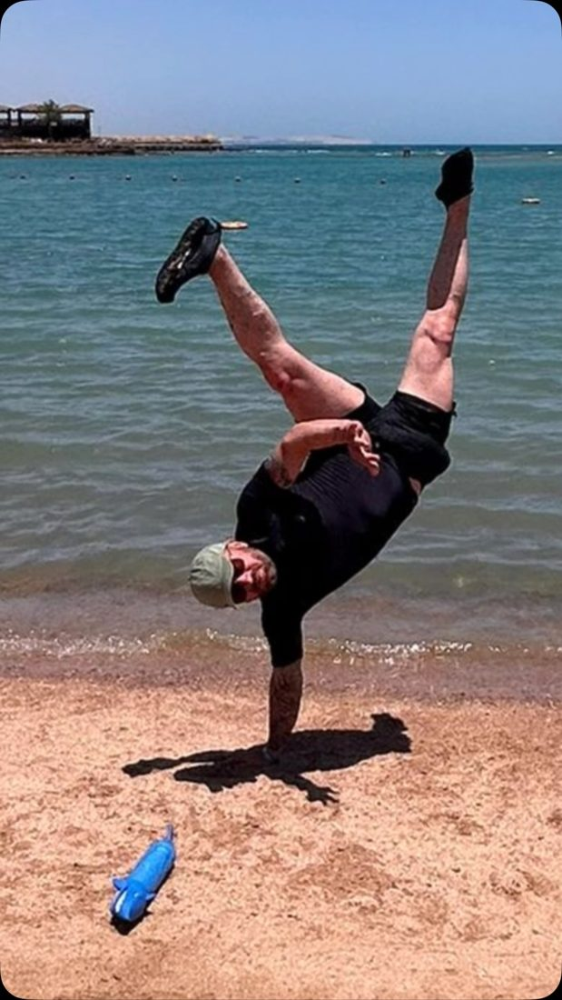
Video: Sahilde tek elle denge Madalya
Madalya
 Hamburg
Hamburg
 Kondisyon
Kondisyon
 Seyahat
Seyahat
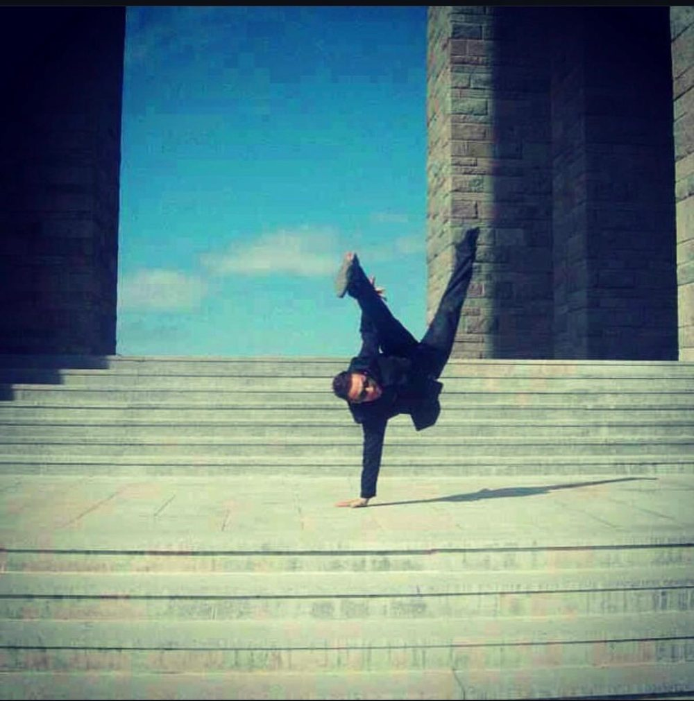
Merdivende tek elle denge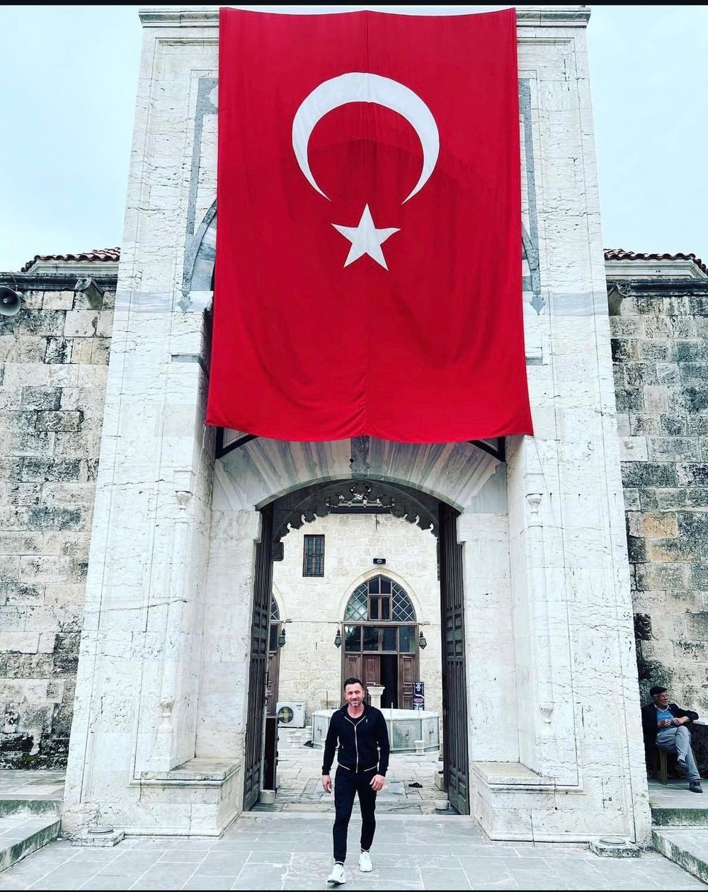
Bayrağın altında Gard
Gard
 Resmi
Resmi
06 — Basın
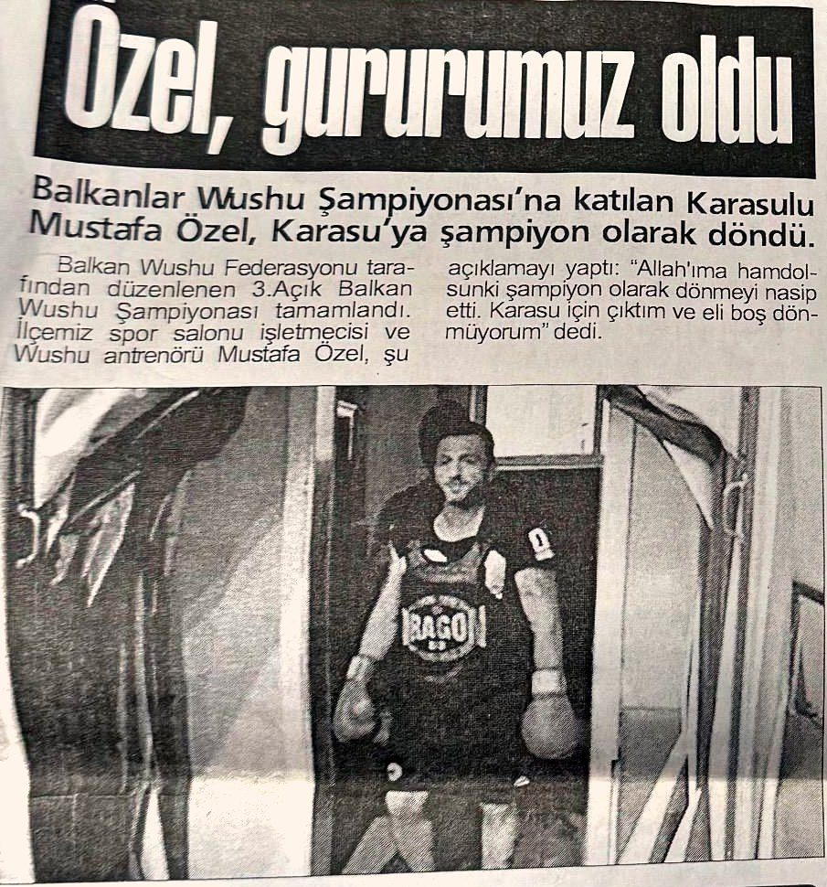
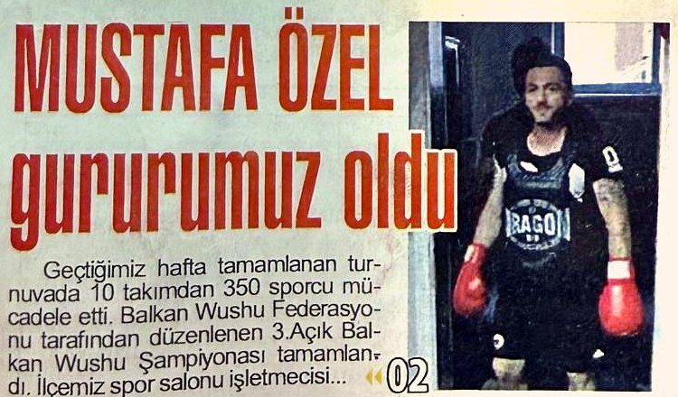
Öz Karasu · 13–19 Haziran 2016 · Manşet ve sayfa 2
“Allah'ıma hamdolsun ki şampiyon olarak dönmeyi nasip etti. Karasu için çıktım ve eli boş dönmüyorum.”
Karasulu wushu antrenörü Mustafa Özel, Balkan Wushu Federasyonu'nun düzenlediği 3. Açık Balkan Wushu Şampiyonası'ndan şampiyon olarak döndü. Turnuvada 10 takımdan 350 sporcu mücadele etti.
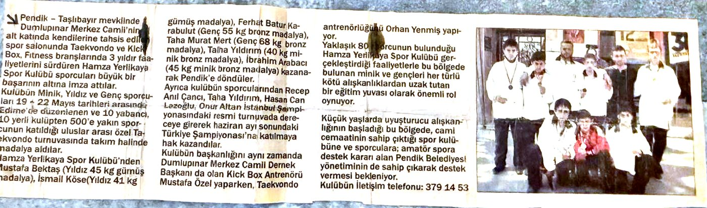
07 — İletişim